In July 2025, the Argentine central bank (BCRA) started a monetary experiment that is unusual (in the sense that it is an intellectual position otherwise abandoned since the 80s), but that I find very interesting theoretically and technically.
Against the overwhelming consensus of monetary theory, the BCRA stopped announcing and enforcing any monetary policy rate at all, “delegating” short-term interest rates to be determined by the market endogenously. Since early 2026, though, the resulting volatility has pushed the central bank into a series of partial walk-backs that make the implementation today somewhat impure.
Beyond Milei’s outsized influence on global politics, I think this experiment is interesting because at least some degree of attention to monetarism seems to be returning to academia (or rather the academics at central banks). Starting with Warsh at the Fed pushing back against decades of Fed orthodoxy that ignored money supply: "Money matters... It's not fashionable these days, but my view is that money has something important to do with monetary policy.”
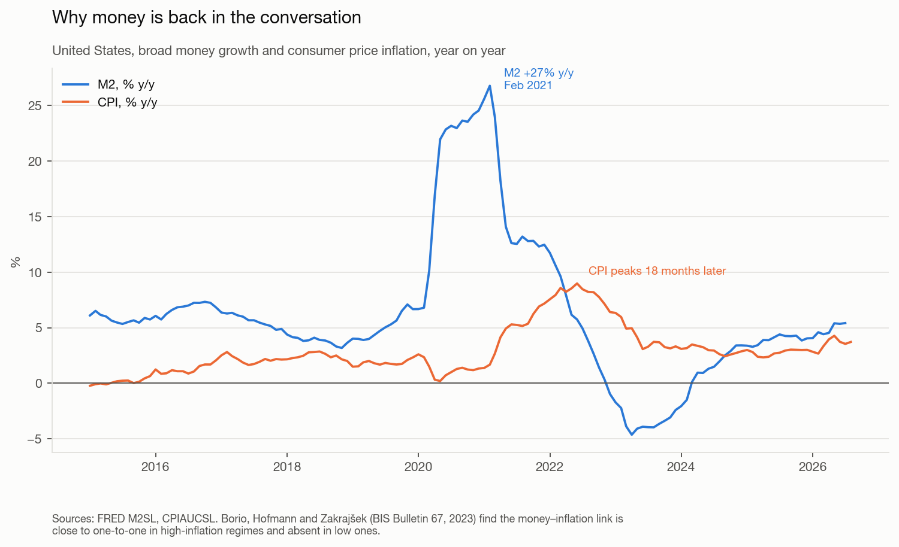
Here I will explain what was actually done at the BCRA, have a broader discussion on whether it was correct or not.
1) Some background
a. The inherited mess
Three things defined the inheritance: i) a remunerated central bank liability compounding at the policy rate, ii) a contingent emission channel out of the BCRA’s control, iii) a reserve-requirement regime that was not effectively enforced.
The central bank was i) creating base money to pay interest (at the policy rate) on its monthly and overnight liabilities, which raised inflation, which required a higher rate, which created more base money. This mechanism is described in Sargent & Wallace (1981). The BCRA had also ii) written put and bid options to banks on Treasury bonds, i.e. an obligation to create pesos overnight to the extent exercised. And iii) effective cash reserves held at the central bank had fallen to 4% of deposits (vs. a historical 12% average). The stock of central bank remunerated liabilities was equivalent to 340% of the monetary base and 11% of GDP in September 2023; and the outstanding put options had nominal value equivalent to 175% of the base and 35% of deposits.
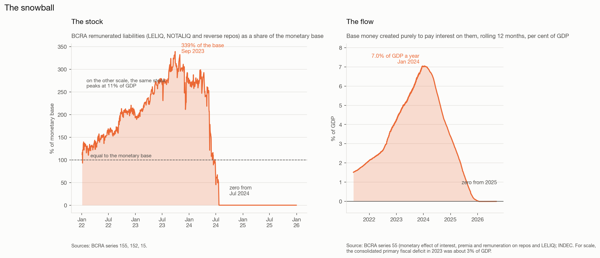
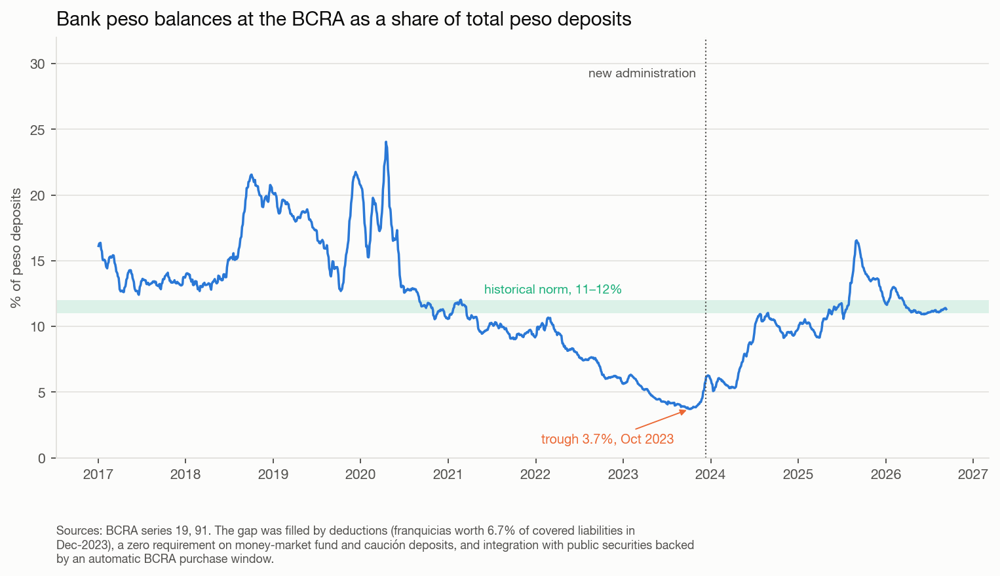
b. Phase 1 of the reform: cheapen the remunerated stock (Dec 2023)
The first structural reform was to shorten and cheapen the remunerated stock. Monthly stock was migrated to one day repos, and the policy rate was then cut to deeply negative real territory (-80% real in early 2024). Counterintuitively to those used to the developed world, this sharply lowered inflation by reducing base money creation for interest repayment and slowing the compounding of central bank liabilities.
The exchange rate was set at a 2% crawling peg.
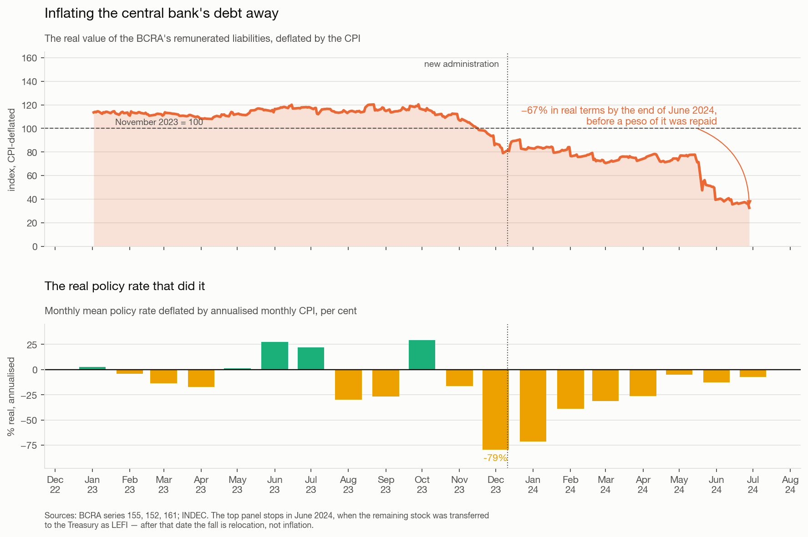
c. Phase 2: relocate the remunerated liability (July 2024)
The BCRA moves the now smaller stock of remunerated liabilities to the Treasury. The LEFI was created, a Treasury bill transferable only between the BCRA and financial institutions, paying the BCRA’s policy rate, but – crucially - with daily capitalisation.
Effectively this became a sort of standing deposit facility with the BCRA buying and selling LEFIs from banks every day at the posted policy rate, with the interest being a Treasury – and not a central bank – obligation. But the interest is never actually paid in cash, just capitalized, exempt from the government’s deficit measure because it reports it on a cash basis. This is the mechanism explained on my other note.
The BCRA also began repurchasing the puts, eliminating potential sources of monetary emission not under the control of the monetary authority.
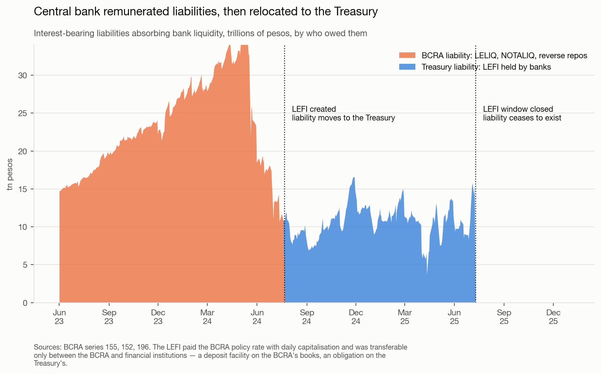
d. Phase 3: swap an exchange-rate anchor for a money supply anchor and eliminating the policy rate (April to July 2025)
The crawling peg was replaced by a float between widening bands; capital controls were lifted for individuals. The announced anchor formally became the private transactional M2, controlled through the regulation of the banking system and management of reserve requirements. The idea was that once the FX bands widen enough, FX will stop being the binding commitment and the aggregate rule becomes the only one.
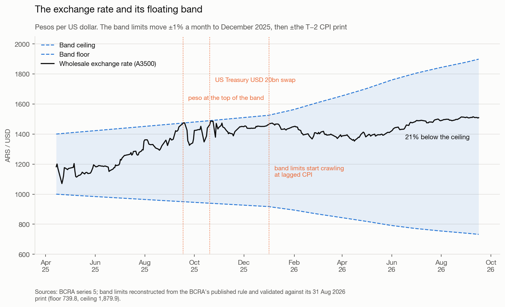
Having a money supply target is a bit tricky. The aggregate the central bank controls directly, the monetary base (M0), has a weak relationship with inflation. The aggregates that do track inflation, broad money measures like M2, depend not only on the central bank, but also on banks' lending decisions and on the public's portfolio choices, so “monetary” policy affects them indirectly.
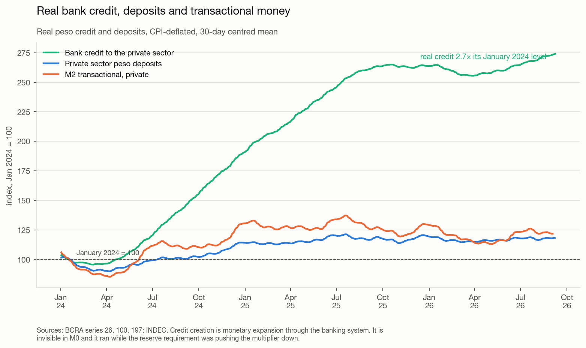
Private transactional M2 was defined as payments money only: currency held by the public, peso cancellation cheques, and non-remunerated peso sight deposits of the private non-financial sector.
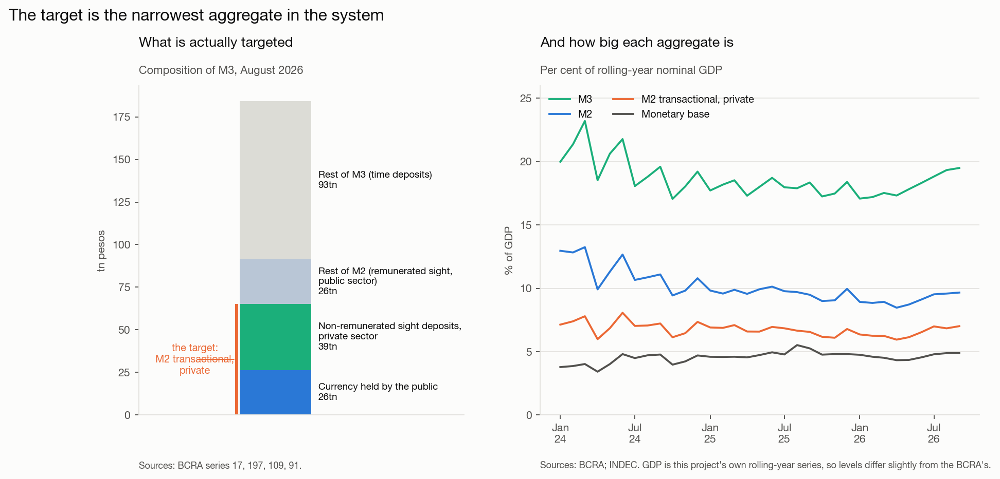
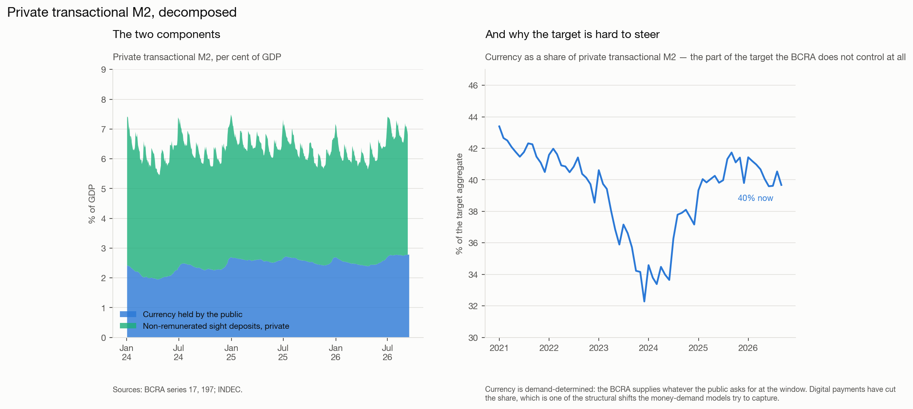
So, in order to determine the target level of private transactional M2, the BCRA estimates money demand and sets the supply target matching it. For example, the BCRA had estimated that the monetary base could remonetise by about 0.6pp of GDP during 2026, rising from 4.2% to 4.8% of GDP. While inflation exceeds international inflation, the BCRA keeps a contractionary (conservative) bias relative to the baseline money-demand path. In other words, it supplies slightly less than estimated demand.
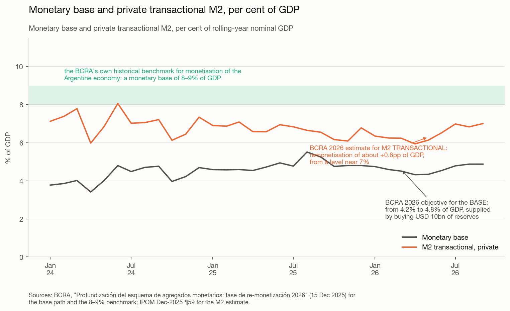
Pesos are issued mainly through FX purchases. The BCRA sterilizes pesos created above demand but sells them to the market while demand evolves as expected. The tightening tools are reserve requirements and OMOs in LECAPs, which it does discretionally.
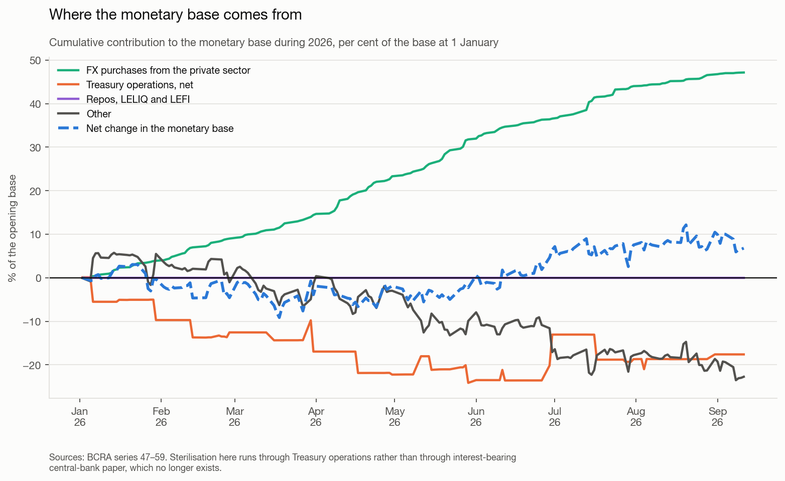
The last step of the reform is formally eliminating the policy rate and all facilities and windows that offer automatic liquidity. LEFIs were swapped for publicly tradable capitalizing Treasury bonds (LECAPs), the LEFI window was closed, and the BCRA ceased to offer financial institutions liquidity windows at a predetermined rate. This was replaced by open market operations in LECAPs with banks at the rate determined by the secondary market.
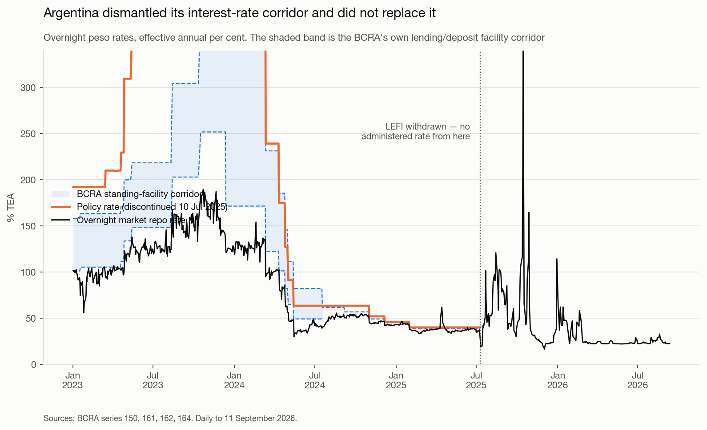
2) Electoral stress leading to partial reversal of the monetary experiment (August 2025)
Mid-term elections in October 2025 and a worse-worse-than-expected performance of Milei’s party in the province of Buenos Aires made money demand collapse: sudden dollarization of portfolios against the risk of Milei losing the midterms. The BCRA's estimate is that the shock cut money demand by 50% of private M2. This was when the peso reached the top of the FX band and Bessent intervened with the US$ 20bn swap.
The result of this electoral stress was the market-determined overnight rate peaking at 380% (vs. the last monetary policy rate before elimination being 34%.)
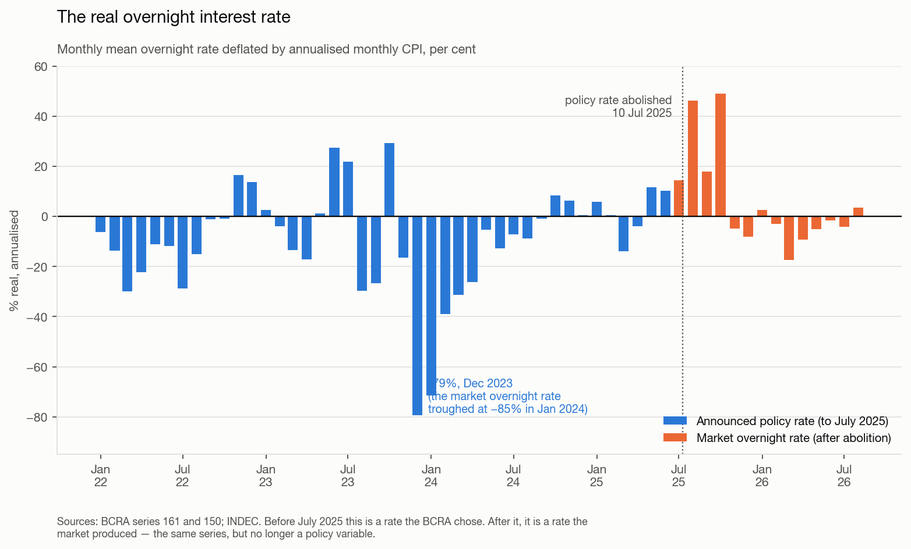
The issue is that given a very limited toolbox, the BCRA was unable to properly manage volatility against such a massive shock. It resorted to patches on top of the simple reserve-requirement lever — monthly averaging of reserves, carry-overs between periods, clawbacks.
It also reintroduced a small and expensive lending facility (though priced off of the market rate) to avoid the end-of-day rate spikes.
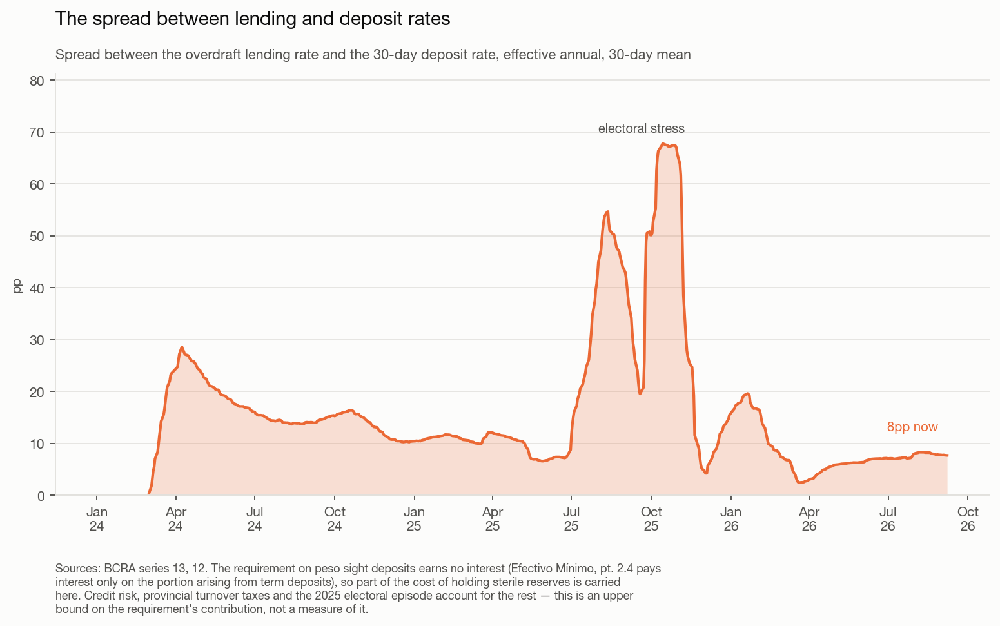
As a stabilisation plan, the reforms were an indisputable success. But most of it was achieved (with much merit) with some smart engineering and mainly not printing 7% of GDP in base money a year. Eliminating the policy rate and targeting monetary aggregates is the kind of puritan long-term ideological pursuit of the Milei government and had nothing to do with the stabilisation. The idea is that interest rates should be endogenously determined because they reveal the intertemporal preferences of agents between consumption and investment, which the central bank cannot know, and therefore setting a price other than the “Wicksellian” natural rate would cause resource misallocation.
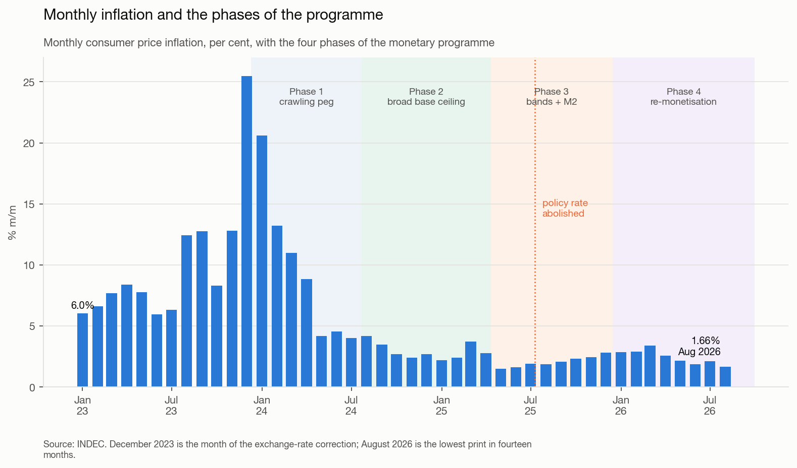
Milei even campaigned with proposals like dollarisation and abolishing fractional reserve banking. Though the administration maintains its ideological positions, it has demonstrated some pragmatism in practice. There still is a minoritarian internal wing advocating for full dollarisation, which does have many merits in my opinion.
3) On why money supply targets can be wrong (or right) in the case of Argentina
MV = PY
Money supply is one of the two terms that determine nominal income; the other is velocity. In Argentina velocity is extremely volatile and politically determined, so a quantity anchor imports political risk, and those shocks are absorbed through the equilibrium rate. Additionally, in a bimonetary economy like Argentina's, velocity is essentially just currency substitution. On its own, this makes quantity a bad instrument.
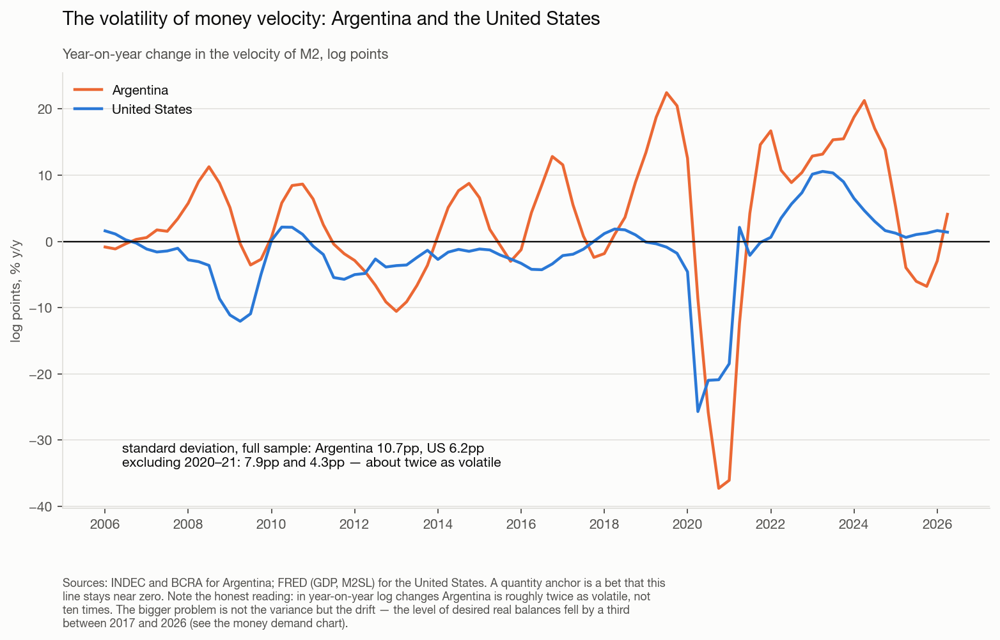
But what is the danger in short-term rates absorbing all the shocks? Pass-through to real economy credit was almost non-existent in the pre-election stress: the overnight rate rose ten-fold in October 2025 and the rate households borrow at rose by a third. On top of this, credit itself is almost negligible in Argentina — domestic credit to the private sector is 15% of GDP, mortgages under 1% — so the impact of an interest rate shock on output is very limited. Interest-rate channels barely exist, which means inflation targeting does not work either. To a great extent, by increasing the policy rate the only thing that Argentina was doing was creating inflation by increasing the interest bill on central bank remunerated liabilities. So how does money reach prices in Argentina? Through the classical channel, the direct real-balance effect (literally currency) and currency substitution, as excess pesos are spent on goods and on dollars. These work here precisely because the financial system is too shallow to intermediate them away, which is the real case for a quantity anchor. The issue is that the currency substitution that carries money into prices is the same thing velocity is: the anchor's transmission channel and its instability are one.
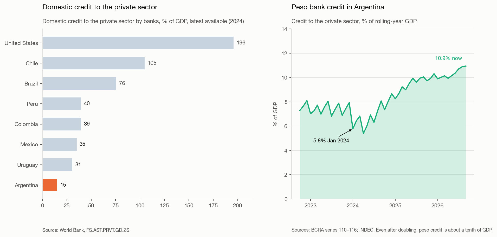
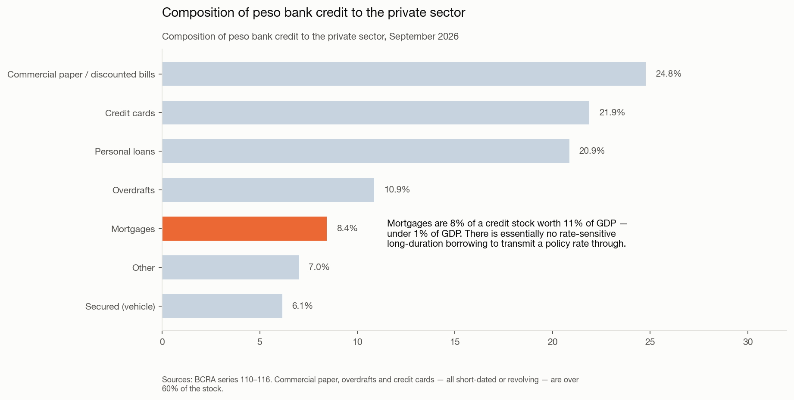
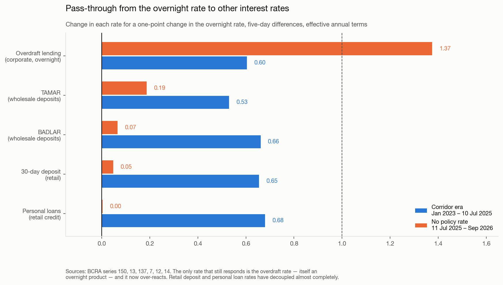
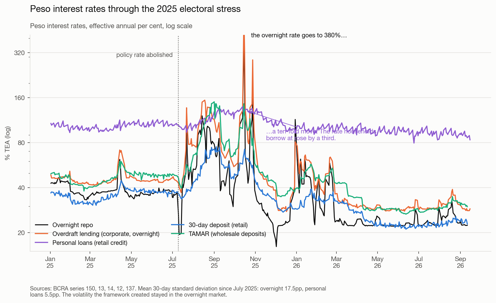
And the quantity target holds only because there is no cash fiscal deficit, it is closer to an accounting identity of the fiscal anchor than an independent instrument. The moment there is a slight possibility that the Milei administration loses (which is always) and a government that runs a deficit wins, price stability becomes impossible. Argentina would have absolutely no access to international debt markets and the only way to finance the deficit would be to print cash.
Even though the Milei administration is advancing reforms to make the central bank much more independent, that is not credibly worth anything if Kirchnerism returns to power. So even though targeting a monetary aggregate might in some sense be the more powerful tool in the case of Argentina, it is still subject to political risk.
The conclusion is that the rate anchor is inefficient because the transmission channels are not there, and the quantity anchor, which does transmit, imports political risk straight into the price of money. The only solution is building institutional credibility, which is a slow and bumpy process and may well be impossible.
Dollarisation, instead, would import that credibility instantly.